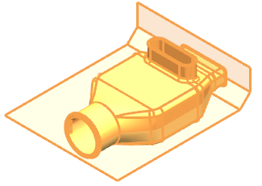

您将创建一个组件，并将实体和片体关联地复制到新建的组件中。
在装配导航器中，右击 wav3_clamshell_design_assembly 节点并选择 WAVE→新建级别。
在新建级别对话框中，点击指定部件名。
在选择部件名对话框的文件名输入框中，键入 bottom 并回车。
在新建级别对话框的过滤器列表中，确保选择的是任意。
选择实体以及修剪片体。

点击确定。
在装配导航器中，您可以看到已添加了 bottom 组件，并且在设计装配与底部组件之间创建了部件间链接，该链接储存在底部组件中。
隐藏底部组件。